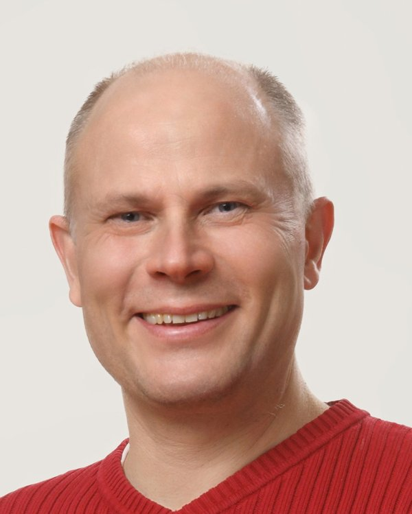

© Markus ÖstAreas of Expertise
- Population- and individual-level responses to increasing predation
- Fitness consequences of behavioural and physiological variation under predation and climate forcing
- Genetic connectivity, gene flow, and diversity during population decline
- Causes and consequences of breeding dispersal, choice of overwintering area, and migration
- Strategies, evolution of animal personality
- Life-history evolution
- Social evolution
Research Projects
- Ongoing project: Hormonal and genetic adaptations to a changing environment: a longitudinal population study of eiders (funding: Swedish Cultural Foundation in Finland)
Special Methodologies & Techniques
- Stress physiology: radioimmunoassay of corticosterone and other hormones (prolactin, thyroid hormones)
- Genetics: reduced‑representation sequencing (RAD‑seq)
- Movement: geolocator tracking
- Morphology and tagging: field measures and colour rings for individual identification
Major Funding & International Networks
- Academy of Finland, project 128039; 2009-2012.
- Swedish Cultural Foundation, 12 grants (2013-2024).
- Maj and Tor Nessling Foundation; 2009-2011.
- ARONIA 10-Year Jubilee Funds (2010).
- Academy of Finland project 104582; 2004-2007.
- Academy of Finland project 51895; 2001-2003.
- Delta Waterfowl Foundation (USA), 2004-2007.
- Oskar Öflunds stiftelse, 2006-2008.
- Ella och Georg Ehrnrooths stiftelse, 2001.
Selected Publications
- The effect of climate change on avian offspring production: a global meta-analysis. Proc. Natl. Acad. Sci. U.S.A. 2023. DOI: 10.1073/pnas.2208389120
- Kin association during brood care in a facultatively social bird: active discrimination or byproduct of partner choice and demography? Mol. Ecol. 2012. DOI: 10.1111/j.1365-294X.2012.05603.x
- Winter climate affects subsequent breeding success of common eiders. Glob. Change Biol. 2006. DOI: 10.1111/j.1365-2486.2006.01162.x
- Brood size matching: a novel perspective on predator dilution. Am. Nat. 2013. DOI: 10.1086/668824
- Drivers of within- and among-individual variation in risk-taking behaviour during reproduction in a long-lived bird. Proc. R. Soc. 2022. DOI: 10.1098/rspb.2022.1338
✏️ Suggest changes to this profile
Last updated: